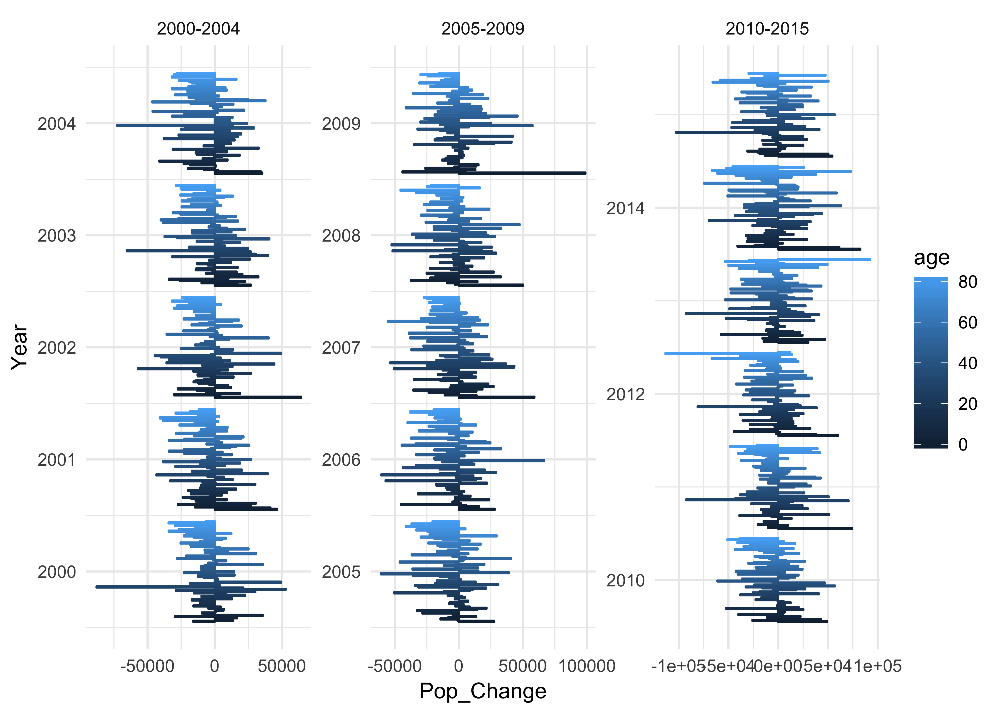
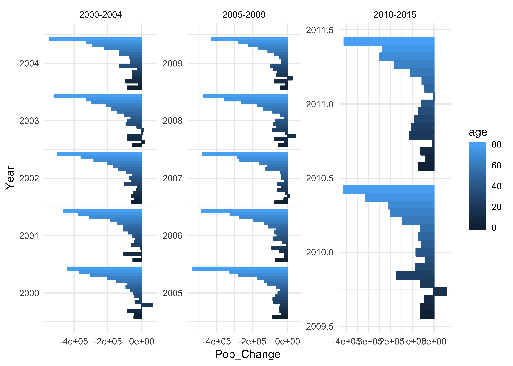
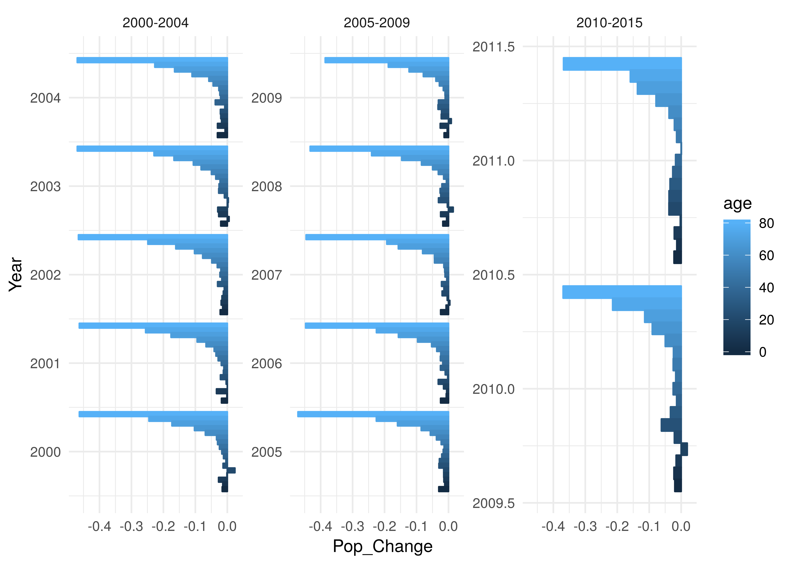

vignettes/pop_changes_life_expect.Rmd
pop_changes_life_expect.Rmdlibrary(tbinenglanddataclean)
library(tidyverse)## data paths - run the making data vignette to get this data locally
birth_path = "../data/tb_data/tbinenglanddataclean/england_births.rds"
demo_path = "../data/tb_data/tbinenglanddataclean/E_ons_lfs_2000_2016.rds"
## read in data
births <- readRDS(birth_path)
demographics <- readRDS(demo_path)## munge births
births <- births %>%
rename(Year = year, Births = births, Data = data) %>%
mutate(Age = as.character(0)) %>%
select(-Data)## clean single year
demographics_single_year <- demographics %>%
ungroup %>%
select(-`Age group`, -`Age group (condensed)`) %>%
mutate(Age = as.character(Age)) %>%
filter(CoB %in% "UK born") %>%
select(-CoB)## summarise by age group
demographics_5yr <- demographics %>%
ungroup %>%
group_by(Year, `Age group`, CoB) %>%
summarise(Population = sum(Population), Age = Age[1]) %>%
ungroup %>%
mutate(Age = as.character(Age)) %>%
filter(CoB %in% "UK born") %>%
select(-CoB)estimate_pop_changes <- function(demographics, births) {
##Join dataframes
demographics <- demographics %>%
full_join(births, by = c("Year", "Age")) %>%
mutate(Births = Births %>%
replace(is.na(Births), 0)) %>%
filter(Year >= 2000)
## set up age baseline and estimate population changes
demographics <- demographics %>%
mutate(age = Age %>%
replace(Age %in% "90+", "90") %>%
as.numeric) %>%
mutate(age_baseline = age - (Year - 2000)) %>%
group_by(age_baseline) %>%
mutate(Pop_Change = (lead(Population) - Population)) %>%
arrange(age_baseline)
return(demographics)
}## Estimate for grouped data
demographics_5yr <- estimate_pop_changes(demographics_5yr, births)
## Estimate for single year data
demographics_single_year <- estimate_pop_changes(demographics_single_year, births)visualise_pop_changes <- function(demographics, rate = FALSE, scales = "free") {
if (rate) {
demographics <- mutate(demographics, Pop_Change = Pop_Change/Population)
}
## basic plot to visualise
demographics %>%
mutate(Years = case_when(Year < 2005 ~ "2000-2004",
Year >= 2005 & Year < 2010 ~ "2005-2009",
Year >= 2010 & Year < 2016 ~ "2010-2015")) %>%
na.omit() %>%
filter(age < 85) %>%
mutate(Year = as.integer(Year)) %>%
ggplot(aes(x = Year, y = Pop_Change, colour = age, fill = age,
group = age)) +
geom_bar(stat = "identity", position = "dodge") +
coord_flip() +
facet_wrap(~Years, scales = scales) +
theme_minimal()
}Single year of age estimates are to noisy to be useful. This is likely due to varing sampling error between years for the labour force survey. This indicates that the data should only be used with caution to estimate the UK born population. There is little evidence of systematic bias.
visualise_pop_changes(demographics_single_year)
visualise_pop_changes(demographics_5yr)
visualise_pop_changes(demographics_5yr, rate = TRUE, scales = "free_y")